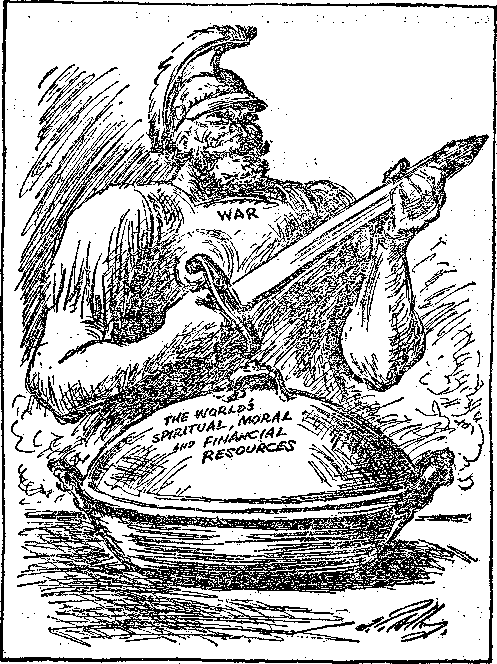
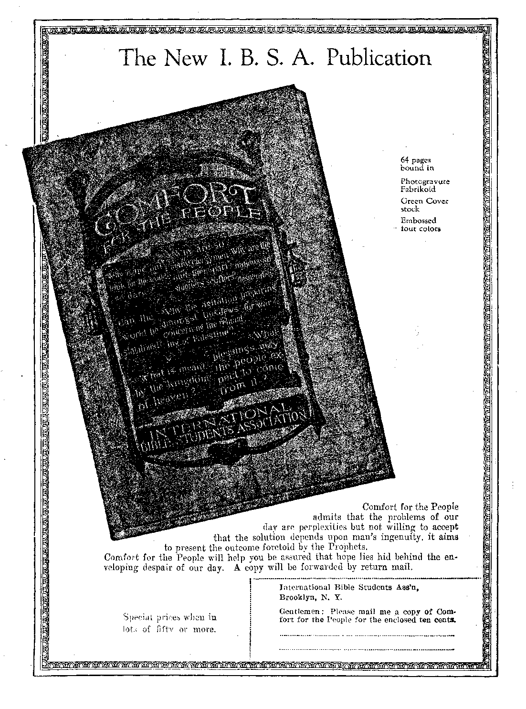

Wt-----......-------=—-=.-==||<^0l=------- - ■ ■ ----
Social and Educational '
Items or Would Niws ................. 611
Will Study Around the World .............. 612
The Cause of . Juvenile Delinquency ..... . . .. . . 612
Teaching Character in the Prisons ............ 617
Masonry and Mythology . ........ 619
Mixed Marriages in British Nyasaland .......... 620
The Modern Delilah . . . . . . . .. .... .... . . . 623
Nature’s Clock . . . . ......... . ... . . . ■ 629
Finance—Commerce—Transportation
Union Men Operate Non-Union Mine ............ 612
Ford Has Them Guessing ...... . . . . .
Florida Real Estate Booming . . . . . . . ... ...... . .
Foodless Farms of the Southwest . . . . . . . . . . . .
gOMESTBADING STILL AVAILABLE . . . . . . , ..... . .
Political—Domestic and Foreign
Changes Impending in Passport Arrangements .... . . . .
Governor .Walker’s. View of the .Klan ..........
. Bible Students Win Complete Victories . . . . . .....
More Light on Causes for Coubtmamtal . . . . . . . . . .
Home and Health
Ford Disbelieves in Medicine . . . . . . . .... .. . . .
When You Get a Cold ...........
What Abb Colds? . . . . . . . . . . ' . . . ..... .
, . . . . Science and Invention .
Inventions Continue to Multiply . . . . . . . .. . .. . . .
Seattle Will Have Largest Telescope J . . . . . . . . . .
Bromine from the Ocean . . . •. 616
Iceless Refrigerator Not Yet Perfected: . .... . . . 622
Every Human Being a Radio .............. 631
Religion and Philosophy
Corroborations of the Pyramid Article . . .... . . . . 626 “Christendom” is Snared . . . . . . . . ... .... . . 627
Origin of Eternal Torture Theory ............ 630
The Jews Returning to Palestine ............ 632
Studies in “The Harp of God” .
Published every other Wednesday at 18 Concord Street, Brooklyn, N. Y., U. S. A., by, WOODWORTH, HUDGINGS & MARTIN
Five Cents a Copy—$1.00 A Year Make Remittances to THE GOLDEN AGE Foreign Offices : British ..... 34 Craven Terrace, Lancaster Gate, London W. 2 Canadian ......... 88-40 Irwin Avenue, Toronto, Ontario Australasian . , , . d . 495 Collins Street, Melbourne, Australia South African ...... 6 Lelle Street, Cape Town, South Africa
Entered as second-class matter at Brooklyn, N. Y., under the Act of March 3, 1878
Volume VI Brooklyn, N.Y., Wednesday, July 1, 1925 Number 151
[Radiocast, with other items, from Watchtower WBBR on a wave length of 272.6 meters, by the Editor]
THE New York Journal calls attention to the fact that on one and the same day, in the legislature of Florida, the constitutional amendment that would protect children from child labor was rejected, and a bill was passed compelling the daily public reading of the Bible in all public schools. Perhaps this is so that when the little folks get jobs in factories, where they may work from daylight to dark, and when they look out of the windows at the directors playing golf in the fields, they can repeat such texts as, “Whatsoever ye would that men should do to you, do ye even so to them.”
HIAWATHA, Kansas, claims the champion ditch diggers of the world. Two men, Calvin Knox and John Huddleston, with ordinary 22-inch ditching spades, have the reputation of digging 1500 feet of sewer ditch 9 feet deep in 30 days. Probably there is not a stone, not even a pebble, in the soil which they dug, but it was a great achievement anyway. These two men average $50 a week ditch-digging. Their employer claims that each is equal to three men.
Coeonel Wieliam Mitcheee, retiring Assis-taut Chief of the Army Aviation Service, in a speech in Washington declared that when all the people were illuminating their homes with kerosene the Army continued to use candles; when the people used gas the army used kerosene, and when the people began using electricity the army still stuck to the old illumin-ants. He maintains that it was with the greatest difficulty that the American army adopted the telephone, the telegraph, the automobile or the radio; says that in the Indian campaigns the savages were better armed than America’s regular troops, and that the World War was won by the weapons of America’s associates. Well, what of it? We are still here, aren’t we?
ONCE a year the War Department pays the cost of transporting 50,000 vacationers from their homes to the Summer war camps and back again. While they are in camp the boys are furnished without cost their food, bedding, laundry, uniforms, shelter and medical care. Attendance at church is compulsory. It need not be said that the Federal Council of Churches is strongly in favor of the program.
THE United States is now manufacturing bombs which weigh 4,300 pounds apiece, intended to be dropped from airplanes in flight. These bombs have a bursting effect sufficient to displace 1,000 cubic yards of hard sand. One of them, exploded in the business center of a modern city, would wipe out the whole section.
TWO changes are likely in passport regulations. The President has made the common sense proposal to abolish the $10 charge for issuing passports, provided all other countries will do the same. Quite likely they will agree. Another likely change is that married women, when applying for passports, will probably be allowed to use either their maiden names or their married names, as they may prefer.
IMPRESSED by the efficiency of the propaganda manufactured during the World War and sold to the American people to the tune of billions of dollars, the Teapot Dome statesmen and their lawyers now pretend that the reason they sold your oil to Sinclair and Doheny was that some unnamed mysterious nation was about ! to pounce upon us and eat us alive. Just how ' this swiping of the oil would prevent the attack W’as not explained, and details were refused even to the court itself. But Doheny was ordered by the court to give back the land.
AFTER investing three million dollars in coal mines in West Virginia the Brotherhood of Locomotive Engineers found they could not operate their mines at a profit and pay union wages; so they are operating them on a nonunion basis., This is on a par with the stenographers’ strike which took place some years ago at the headquarters of the Federation of Labor at Washington.
Percentages of Home Ownership
OVER 41 percent of the citizens of Los
Angeles own their homes. The cities next in order are Detroit, Baltimore, Cleveland, Milwaukee and Denver where, on the average, 36.3 percent own their own homes. Next are Kansas City, Philadelphia, San Francisco, Pittsburgh, Washington and Chicago, where the average is 28.3 percent; then come Cincinnati, St. Louis, New Orleans and Atlanta with 23.4 percent. Last on the list are Boston and New York City, which make the poor showing of only one house in seven owned by the person who lives in it.
MORE than eight times as many people are killed or injured each year as die from natural causes. For every death by accident there are 130 disabling injuries. The insurance companies tell us that 27,714 persons are injured every day in the year, which amounts to more than 10,000,000 altogether during the year. At present one person is killed in an automobile accident every 37 minutes.
A PEDESTRIAN in the northern part of
New York city made a savage lunge at a man in an antomobile who, he supposed, had nearly run him down. He lunged at the wrong man; but so frightened the driver that the poor man lost control of his car, with the result that both men were killed when the car went over a bridge* The driver of the car, a widower, had insured his life for $15,000 only the day before the accident occurred, and leaves this tidy sum for the education of his orphaned child.
A T LAUREL, Delaware, a little three-year-old tot escaped from his nurse, wandered to a railroad bridge, tried to cross, but fell off the bridge thirty-five feet into the water. The bridge tender, R. W. Dunn, saw the accident, stopped a fast freight that was coming, ran to the point where the child fell, took a header and brought up the child safe and sound. A good job, well Dunn.
TT IS all up. We have been found out. Miss
Charity Sumeral, of Greenville, South Carolina, who boasts that she is 109 years of age and that she has never been married, says now that she never will be married. The reason she gives for her decision is that the men are no good. Some men will say she should have explained that the reason for it is that men are not brought up right.
IN THE Frazer River, near Vancouver, British
Columbia, during the month of April a. sturgeon was caught which weighed 1015 pounds and was twelve and one-half feet long. The fish was so large that it was dispatched by a sledge hammer. A sturgeon half the size is considered remarkably large. This great monster is estimated to have been 300 years old.
TWO hundred high school boys in Gladstone,
Michigan, were indignant because the girls came to school with their stockings rolled. Thereat the boys decided to come without collars and neckties. They were expelled because they refused to dress properly, while the girls were allowed to continue to “roll their own”.
SA TUNG from New York, on September 25th’, four hundred and fifty university students will round out their education by a cruise around the world, which will take eight months. The trip will include visits to thirty-five of the seventy countries of the world, and will include stops at fifty ports. Classes will be held regularly enroute.
Pennsylvania Will Electrify
REPORTS have it that the Pennsylvania Railroad Company will electrify its main line between Washington and New York, a distance of 225 miles. This will be the longest stretch of electrified railway in the East. The longest electrified section in the West, or in the world, is that of the Chicago, Milwaukee and St. Paul, over the Rocky mountains, about 400 miles.
A WEEHAWKEN, N. J., man recently bought a new car and went out to learn how to drive it. On the first trip the car went through an iron fence and jumped 160 feet to the foot of the Palisades, landing on the West Shore Railroad tracks. The owner was thrown to a projecting ledge and escaped unhurt, but his car was reduced to scrap iron and splinters.
ABANDONED street car lines are now in evidence here and there throughout the country, the bus lines having forced them to the wall. In the sizable city of Phoenix, the capital of Arizona, the street car company has just given up the ghost and gone out of business. A bus company will operate over the same route.
WHEN the Government steamer Norman turned turtle in the Mississippi river, with a loss of twenty-two lives, a negro, Tom Lea, by careful and repeated trips with a motor boat saved the lives of thirty persons. There was no panic, no outcry, and almost no disorder connected with the disaster.
ENDEAVORING to fathom the reason for growing juvenile criminality, “The Literary Digest” decides that there can be no question that the responsibjlty for it rests with the home. But what has changed the home? The answer is that the professed ministers of the Gospel, who should have been teaching the Bible, good will and the love of the Creator, have been teaching evolution, class hatred and the love of self.
THE farmers, in a section of Massachusetts some seventy-five square miles in extent, discovered unusual losses in their domestic animals. Investigation disclosed that trappers had sown the district with capsules of tallow filled with a deadly poison, and planted here and there with a view to killing fur-bearing animals. The men were fined and left the state.
Seventy-Eight Years in One Home
SEVENTY-EIGHT years ago Mrs. Jane Anne
Williams of Avon, New York, then a bride of twenty-two years of age, came to live in the little house which she still occupies. Though she is now7 100 years of age Mrs. Williams is in good health, and we think has excellent prospects of being of the millions now living who will never die. Avon, in the beautiful Genesee valley, is a delightful place to live, and we think Mrs. Williams has been wise to remain where she is. Why go to green fields far away, when those at home are so desirable?
HHHE Pennsylvania Railroad has given distinctive names to its most famous freight trains. These freights, heretofore known by number only, will now be called Meteor, Eagle, Spark Plug, Rocket, Bullet, Blue Streak, Hummer, Gas Wagon, Arrow, Mercury, Packer, Man O’War, Yankee, Eclipse, G reyhound, Uncle Sam, Comet, Blue Goose, Standard, Bison, Accelerator and Ironmaster.
WITH his net profits last year of more than $100,000,000 Henry Ford has the big financiers of New York guessing. They would like to have a finger in the pie, but all in vain. He laughs their whole interest scheme to scorn, and is opening a bank of his own in Wall Street. Now he is getting ready to flood America with 10-passenger all metal airplanes which will fly 300 miles per hour and change history. .
rp HIRTY-FIVE van loads of money and securities were recently moved a distance of three miles in New York city, all in one morning. The Equitable Life Assurance Society moved from the Equitable Building, at 120
Broadway, to,its new, home uptown, near the Pennsylvania station. The vans were armor-clad, bullet proof, and the procession was protected by abundant police with machine guns all ready for action. It took four hours for the entire transfer.
OPING to interest the Government or other responsible parties, six Russians flew from
New York to Washington in an airplane designed to carry freight. They had on board with them two grand pianos each weighing six hundred pounds. The progressive Berkley-Carteret hotel of Asbury Park, N. J., will this season provide facilities for its guests to commute to New York by hydroplane; the landing place in New York will be the Hudson River near sixtieth street.
Department of Justice on Trial
orman IIapgood, Chairman of the Wheeler Defense Committee, is making a pretty good showing in his claims that the new trial of Senator Wheeler in “Washington, on the same changes aS'those on which he was acquitted in Montana, is not prosecution but persecution, and that what it all really amounts to is that the Department of Justice itself is being placed on trial before the bar of public opinion. Let it come. If the Government is not sound and honest the people should know it.
tjdge Raymond' MacNeille, of Philadelphia, heeded the appeals of a father that al5-year-oId boy, repeatedly arrested for theft, be not sent to the Reformatory at Huntingdon; but the Judge required the father to take the young man, designated by the court as “a dressed up dude with a yellow streak”, and beat him with a strap until the court could see the marks. This was done in the ccller of the court building, and to* the full satisfaction of the judge. Who shall say that this was not better for the young man than sending him away to a crime school?
ELAWARE continues to believe in the whipping post, as the proper penalty for certain classes of crimes. In Delaware, if a man beats his wife, he is tied to a post and gets a taste of his own medicine. Who shall say it is not a good, thing for the man, even though its influence on the bystanders be not so good? An effort to change the law has just failed.
overnor Cliffqrd Walker, of Georgia, in. a recent address said: “During the past two years in Georgia, since Nathan Bedford Forrest . has been at the head of the Klan affairs, we have had less violence in Georgia than ever before in the history of the state.” The department of records of Tuskegee Institute, Alabama, recently announced that the negro lynchings in 1924, sixteen in number, were the smallest in any year since records have been kept. * ’
HpiIE dangerous age, as disclosed by prison statistics, lies between the years 21 arid 24.
Within this age, group arrests, convictions and commitments reach their maximum. About eighty percent of the prisoners in state institutions are first-termers. The real difficulties faced by the young in their efforts to establish themselves in-the world and their unwillingness to work hard for awhile at small wages, are responsible for this. Later in life they have funds of experience' which make the earning of an honest arid Satis-' factory living less'difficult.
TEXAS druggist brought about the cap-' ture of a thief by causing the thief to take;
a snapshot of himself. When the thief pulled open the cash drawer, a flashlight exploded and the shutter of a Camera opened. The thief supposed he had been fired upon, and fled, but he left his picture in the camera and was arrested at once. He was in the same predicament as the: thief who held up a noted artist. The thief took the artist’s money, but the artist went to ■ his room and sketched the man so perfectly that he was in jail before the next night.
IN THE city of New York in 1924 there were 284 murders. Arrests were made in 161 cases, which is 56 percent. The names of the perpetrators of another 24 percent are known, and in due time their arrest is certain. Of the remain-ing 20 percent inany are of deaths of which there !
■ ' sL were no witnesses other than the slayers, but in some of these cases unsuspected clues, turns of fate or guilty consciences will at length bring about confessions. The Lord will square the whole account eventually.
NEW YORK claims to have the finest police force in the wo rid: but the New York Times reports that, by a series of blunders, the department sold at public auction on April 13, $3,000 worth of silk stockings which had been stolen from the store of Jacob R. Gold & Co., right at the time when one of the city detectives was trying to locate the stockings. It is alleged that the stockings were left on a truck near police headquarters shortly after the theft, and by some slip got into the hands of the property clerk without being identified.
NEW YORK city has a new map of which it is justly proud. The map, which is thirty feet one way by twenty-seven feet the other, shows the city as it is. It was made up of two thousand photographs taken from airplanes flying over the city at a height of ten thousand feet. It required three thousand miles of flying to enable the planes to photograph the entire 625 square miles of the city’s area.
Judge William E. Thorpe, of Greene County, New York, has inaugurated a method of sentencing criminals only after they have been given a psychiatric test by a physician. In ten cases just handled seven were placed on probation, one was sent to a hospital for the criminal insane, and two were sent to a home for the feeble-minded. Judge Thorpe believes this is the only proper method of disposing of criminals. Prisons are merely schools for criminals.
KANSAS now claims to grow the best wheat in the world. We had supposed that honor belonged to Minnesota and that the famous No. 1 hard wheat of the Red River Valley had no equal. But Kansas claims that her Turkey Red wheat is still better and that a barrel of flour made from it will make twenty more loaves than any other wheat known. The interesting part of the story is that this wheat was. brought into the United States by a Russian emigrant in the early seventies, wrapped in a handkerchief,
DURING last winter southern Florida had the greatest real estate boom ever known in any part of the United States at any time. It is estimated that during the height of the season more than 20,000 persons a day arrived in Florida, about one-third of whom became purchasers of land. At one time, it is estimated, more than 18,000 automobiles were in camp around Tampa Bay. Land once considered valueless is now raising three crops a year.
THE Farm Bureau Federation points out that there are in the southwestern part of the United States about a million farms that grow no hay for forage or stock, keep no chickens, have no gardens for table vegetables, make no butter, raise no pigs, grow no potatoes and have no cows. The Bureau might have pointed out that there is one other thing these farmers lack, and that is common sense. Every person that can do so ought to raise at least some of the food that he consumes.
A LITTLE less than a hundred years ago one of the employes of the United States Patent Office resigned because he felt sure everything had already been invented and patented that could be devised. But during the year 1924 the number of patent applications received at Washington averaged about 300 a day, and the number of patents granted daily was about 200.
THE ten members of the President’s official family are pretty well distributed among the various Protestant denominations. The secretary of State is an Episcopalian, the secretaries of the Treasury and of the Interior are Presbyterians, the secretary of War is a Unitarian, the Attorney General is a Universal1st, the Postmaster General is a Christian Disciple, the secretaries of the Navy and of Agriculture are Congregationalists, the secretary of Labor is a Baptist and the secretary of Commerce is a Quaker. The Methodists are left out.
IF YOU operate a typewriter you have a chance to make your own ink. When a ribbon is worn out put it into two quarts of clean water, rain water preferred. Boil the ink out of the ribbon, strain the fluid and place it in bottles. It is. claimed that this makes a non-fading ink which will neither cake nor corrode the pen.
THE bear puts the telephone out of commission by climbing the pole, looking for honey.
He cuffs off a few insulators and there is a short circuit. The eagle flaps his wings and brings live wires into contact. The spider’s web becomes wet and does the same thing. The radio is exempt from these annoyances, but frequently suffers from "static” just the same.
THE largest telescope in the world is now at Mt. Wilson, California. The lens is eight feet four inches across. The next largest is at Little Saanich, British Columbia, six feet one inch across. But Seattle is now having built for its own observatory a lens which is exactly ten feet across. The dome which will contain this telescope is 100 feet in diameter.
BROMINE, which is useful in motion picture photography, ethyl gasoline and medicine, exists in the ocean in the rate of one pound of bromine for every 1700 gallons of water. A ship fitted up for the purpose is now engaged in the experiment of seeing whether this bromine can be profitably extracted. We predict for it an ultimate great success.
rp HE weather forecast, already very good, will be improved by the daily flight of a navy airplane into the heavens, above Washington. An expert navy aerologist will go along, carrying with him thermometers and barographs, which will record conditions with accuracy. On the return of the plane the Weather Bureau will. make use of the data. Weather conditions are much affected by the state of the upper atmosphere of which hitherto no daily reliable information has been available.
"Ip VERY day’s news brings fresh proof that the evolutionists have been libeling the apes in claiming the latter as their grandfathers, and that the Bible story of creation and the Flood is correct. Butterflies have been found in glacial ice at Cordova, Alaska. These butterflies while enjoying the tropic clime of the northern latitudes in Antediluvian times, were suddenly caught in the great storm of Noah’s day. At the poles this took the form of snow and overwhelmed all living things in a casket of ice.
'KTEW YORK is blessed with cockroaches, not the ordinary kind such as are to be found elsewhere, but a superior variety. Possibly the New York housekeepers may be too neat. We cannot say. But the discovery is that the New York cockroaches are fond of books. They attack the backs of books to get at the starch and flour put in to give the fabric stiffness.
Blindness in New Hampshire
TpOR some unknown reason the percentage of blind persons in New Hampshire, which is at the rate of 1532 blind persons per million of the population, is higher than in any other state in the Union. In the state of Wyoming there are but 154 blind persons per million. The percentage of blind persons in the United States has fallen considerably in ten years.
Henry Ford is alleged to have recently said: “Medicine is not a bit of good for anything.
I am working now to have the doctors in my hospital do away with its use altogether.” More and more people are coming to be of Henry’s way of thinking. Some doctors have said that if all the drugs in the world were sunk in the sea humanity would be better off.
AT A Chicago hospital a little girl, crippled for three years with paralysis, and unable to walk, has regained the use of her limbs, and is able to walk without cane or crutch. Her physician, Dr. Philip H. Kreuscher, braided thread into the helpless muscles of the leg and joined these to vigorous muscles in the side, with successful results-
IT IS not that in Colorado they have more faith than elsewhere, bnt all the same Colorado has at least two moving mountains, and one of these, in the western part of the state, is reported to be moving to the extent of several feet per month. In each case a soft clay base has become water-soaked through seepage and can no longer hold up the mountain. The one at Meeker, Colorado, has moved a total of about one-fourth mile.
A CANADIAN instructor in physics, Prof.
A. S. Eve, in an article in the February ““Atlantic Monthly” points out that if the entire population of the world were dropped into Lake Ontario there would be room for each of them to enjoy a good swim, as they would have sixty square feet apiece. He concludes by saying that the entire crowd would raise the waters of the lake less than half an inch. The prophet Isaiah says that the nations are but as a drop in a bucket. -
The Old Family Toothbrush
THOSE wretches who make parodies are wont to sing of “The old family toothbrush, the moss covered toothbrush, the dirty old toothbrush that hung in the sink”. But now comes the president of the American Brush Manufacturers Association and solemnly tells us that in his business he often hears authentic accounts of tooth brushes three to fifteen years old. Theoretically the United States should use 330,000,000 toothbrushes per year. Actually it uses about one eighth of that number.
rpiIE Bible Students have won complete legal -*■ victories at Ste. Anne de Beaupre, Quebec, Westmount, Montreal and Calgary, Canada, where strenuous but ineffective efforts have been made to interfere with their putting forth the truth in their own way. The courts have decided, wisely and justly, that no law can be invoked to prevent them from going ahead with their work. The days of the inquisition and the rack seem to be in the past. Efforts to revive the methods of fraud, force and chicanery once practiced no longer avail. Moreover, the ancient bluff has also lost its force. Squawking is all that opposers can now do.
rpHE Pathfinders of Amercia, engaged in teaching character (not stated in terms of so-called “religion”) in schools and prisons in Michigan and elsewhere throughout the country, have called a convention of humanitarians to meet at Monte Ne, Arkansas, for one week beginning July 4th, 1925. The organization is not for profit.
THOSE who desire to pioneer in the “wild and woolly” West need not be apprehensive lest there be no land available; for there is plenty for some time to come. Of course, much of this land is mountainous, some is desert waste, and some is covered with snow. But eventually the “deserts will blossom as the rose”; for already that has had a beginning; and when the ocean currents make further change which will send the warmer streams further north, there will be a greater receding of the glacial zone and the snows will melt, bringing pasturage and fruit-bearing conditions to lands which now extend far north. What we have to say now has to do with the United States; but there are millions of acres in other parts of the earth belonging to other countries which shall also be available for habitation sooner or later.
The government agents have been doling out public land for a hundred years; yet the United States has some 185,000,000 acres which are available to settlers for almost nothing. Statistics show that during 1924 there were 13,886 homestead entries made with Uncle Sam’s public land offices.
Besides the 185,000,000 acres within the United States proper, the Government has 350,000,000 acres in Alaska awaiting the ingenuity of man to clear out forests, build bridges, make hard roads, build homes, and give the landscape a touch of civilization. It is only a question of time until this shall be done, but under entirely different conditions from those which prevail today.
Great strides have been made in homesteading during the past century; but it is said that there is public land in every state west of the Mississippi, except Iowa. Some of this land is comparatively good; and the automobile is making outlying districts easily accessible to habitation. Driving the. railroads through the forests is no longer necessary.
In Oregon there is probably the best land to be had, and that for only $2.50 an acre. It is timberland, and clearing it of the trees is the great drawback, for the value of the lumber is offset by the hardships of housing in the wilds. Perhaps the prosperity of the East and the comparative ease with which one may there acquire a livelihood is another drawback, for pioneering is not especially inviting.
There are great areas of semi-arid land, suitable for grazing, to be had in many states. But those who desire to possess this land must have the means to stock these ranches; they must have sticking qualities and demonstrate that they are willing to stick it out.
It is not required that those who come into possession of desert districts should live on the land. Some people with-money have acquired such land, dug wells and introduced a system or irrigation. Farming in this businesslike manner has proved a paying venture in many cases.
But have we any conception of the area which 185,000,000 and 350,000,000 acres comprise? The unclaimed public land in the United States proper is equal to the area of the states of Texas, Massachusetts, Connecticut, Vermont, and Delaware combined. In Alaska it equals the total area of the states of Texas, New York, Pennsylvania, Ohio, Indiana, Illinois and Iowa. And all this public land, which the government will sell for little or nothing, equals in area the whole region of the United States east of the Mississippi Biver, excluding West Virginia.
And yet some people try to make themselves believe that if all the dead, from Adam’s time to ours, were raised from the death condition, there would not be standing room for them upon the earth. A very liberal estimate of all the dead is placed at 24,000,000,000 of people. The state of Texas alone, as a vast cemetery, allowing ten square feet to each grave, would bury 731,523,640,320. So if the dead are coming back, let us hail their return with joy! There will be land for everybody.
When You Get a Cold From The Farm Journal
ALTHOUGH not dangerous of themselves, colds should not be neglected, for the weakened condition of the body and the inflamed condition of the mucous membrane leaves an open door for the more serious infections of pneumonia, mastoiditis, tuberculosis and other ills.
Isolation of the person who has the cold, as far as possible, care in the use of the handkerchief, the use of a separate towel and drinking cup, and refraining from kissing or breathing or coughing in the face of another, will do much to prevent the spread of colds.
As some one said, “Sneeze into your handkerchief, not into the community: you get just as good a sneeze, and the community may avoid an epidemic.” Special care should be taken that the family dishes are washed in hot soapy water and rinsed in scalding water, particularly when any one in the family has a. cold. The dishtowels should be boiled at least once daily.
A soft, light diet with little or no meat, plenty of fruits and vegetables and an abundance of drinking water will help the body throw off the effects of a cold. There is nothing better for the patient or the neighborhood at large than for the person with a cold to remain quietly in bed for a day or two. The cold then soon disappears and leaves no bad effects and, what is more important, an epidemic of colds may have been prevented.
[Note: Colds generally result from a clogged condition of the system, caused by eating overmuch of mucus-forming foods, such as bread, potatoes, macaroni, rice, oatmeal, in fact all starchy foods. A cold is the red flag of distress which our bodies hoist; therefore the “flag” should not be hauled down too soon. Follow the above instructions and the cause of the cold will be removed, and the cold will soon disappear for the’want of a cause.—Ed.]
SOME years ago w published in The Golden Age, in two instalments, an article from the pen of Mr. Morton Edgar, setting forth the Scriptural evidence that the ’ heathen mythologies have a common origin in demonism. In particular he pointed out that Osiris, prominent in mythology, is identical with the sun god, or Baal, or Molech; or, the devil. .
We now present some startling information from tM pen of Reverend Charles H. Vail, D. D., 32nd degree Mason, published in the “Masonic Digest”. He says in part :
■ “It is quite evident that the legend of Hiram Ab iff and that of Osiris is one and the same. In fact, as stated by Pierson,- ‘we recognize in Hiram Abiff the Osiris of the Egyptians, the Mithras of the Persians, the Bacchus of the Greeks, the Dionysius of the. fraternity of the. Artificers, and the Atys of the Phrygians, whose passion, death and resurrection were cele-. brated by these .people respectively.’ (Traditions of Freemasonry, p, 240) . These terms represent the sun on the one hand and the Initiate on the other, and are.derived from the Sun Myth and the Rites of Initiation; The passage of the sun through’ the twelve signs of-the Zodiac' was made to' symbolize the activity of the Solar Deity in the universe arid the spiritual growth ; of the soul. ' - i ■
“The Egyptian Ritual or Book of the Dead gives us a clue to these Initiations. The similarity of the ancient and modern forms is quite apparent. ‘The Legend of Hiram Abiff,’ as stated by Dr. Mackey, ‘was evidently borrowed from the pagan mysteries, where Bacchus, Adonis, Proserpine, and a host of ‘other apotheosized beings play the same role that Hiram' does in the Masonic Mysteries.’ (The Symbolism of Freemasonry, p, 20) The legends are not only the same, but they symbolize the same great truth—not: merely the immortality of the soul after death but the possibility , of attaining a knowledge of that immortality : here and now, by developing the higher powers latent . in man. This is the real teaching, of the Master Mason . Degree. . .
“It is no mere coincidence that Modern Masonry imitates the Ancient Mysteries. General Pike, the eminent Masonic authority, well says: ‘The men of intelligence formed the degrees for the purpose of communicating their doctrines, veiled by their symbols except to those fitted to receive them, and to give to all others trite moral explanations of them which they eould receive.’ ” ' ' '
The .“Montana Mason,” in its issue for January, ' 1925, confirms the findings of Reverend Vail, as'to the identity of Masonry with ancient
mythology and therefore with demonisni. We quote two paragraphs: ■ .
“Now, Masonry is: the. modern successor of the ancient mysteries, not merely as they were elaborately organized in Egypt, India, Persia and, Greece, but as in more inarticulate forms they find expression in the earlier, ages, even back to the times when man had scarcely become human and there was as yet no organized society.”
“It is the modern successor of the ancient mysteries, summing up in the twentieth century that elemental and age-long instinct of the human heart for the mysterious and wonderful. That instinct is ineradicable and is conformable to modern as well as ancient and primitive conditions of society. ■ Humanity loves mysteries, wonders, secrets.- The ceremonial initiation in some guise or other strikes a vibrant chord in human nature. ‘The mystic tie’ is an elixir of intoxication which humanity will never outgrow, and should not,' if this earth is more than a mere matter of fact materialism, and rather what it is intended to be, the ■ true home of poetry, music, art, religion and civilization. It:, is this element in Masonry which links it with religion.” -.
PREPARING FOR THE FINAL FEAST (From Commercial Appeal, Memphis)
Mixed Marriages in British Nyasaland
A S YOU know, there are many subscribers xx to The Goldek Age among the natives in this part of Central Africa, and it is with the hope that I may be able to help some of these that I write the following appeal:
I can see that we native women are spoiling our tribe by so-called marriages with white men, wherein we think that we are married while we really are not. The reason why I speak about this is because there are many native women in Nyasaland who think that marriage to a native is unprofitable, and therefore prefer to sell their bodies to the whites for the price of bread. In this way they think they can find quick profit and large returns, more than by working with their hands. They do not realize that they are ruining their bodies and defiling their new-born babies as well as their own names and lives.
There is many a young native girl who thinks that she should not be married to a blackman: she would rather be married to a white man than to her black brother because the white man is rich and has plenty of money. She does not know how much the white man really despises her, though he will pretend to become married to her.
I know some white men who, when they “marry” a native woman, build her a hut about 100 yards or more from the main dwelling house; and the “wife” is kept in the hut during the day, and is only called at night; that is, if there is no other woman (stranger) at his house, then she is called. She has no right to go to his house unless she is called; then she must go. The man, of course, has the right to take any woman he may think fit for him, anytime, and the said “wife” is not allowed to complain against her husband; she has no right to even speak with him. He is to be regarded as sort of a god, not in love and sincerity but in cruel mastery over her? These things he does because the woman is of another color, and he knows she can never stand against him.
Another thing is this: Everywhere else it is the custom that a married woman should drop her family name and take her husband’s name; but this is not done when the white men “marry” native women here. They are not really marrying them; the women are being corrupted and enslaved by the white men. And once a black woman becomes “married” to a white man she By Mrs. rA. B. Lawrence (a native) will never later be married by any of her black brothers; once she is taken by a white man she is thereafter considered a lewd woman.
These white men say they do not come here to spoil our tribe; they come here with what is known as the Bible. But now, since the white men have come, our women are abandoning their former right thinking and living, and instead of becoming civilized they are copying the lives of the mean white men, who are not civilized themselves.
There are some white men who think they are too good to even talk to a black man or to a native woman. Then there are many other white men who break the homes of the native married people, and get the women from their native husbands. They will claim that the native man has no money wherewith to feed his wife, so the white man just goes and steals the woman from the helpless native. The white man first came to Nyasaland to give us the Christian gospel, and now the natives are being kicked, and robbed of their wives by the Christian whites so that now half of our women can hardly bear children because of abuse by their white “husbands” ; and many other evil signs are seen.
Who ever saw a black man here in Nyasaland marrying a white woman, or even going with one! If so he is at once murdered or hanged for his sin against both God and man. And these same white people who were but ten years ago saying, “We came to die for you,” are now leading our silly native women astray. The white man or missionary who does such things has no real love in him. If he loves the black man and wants him to be saved then he would never lead our women into sin.
And now, I appeal to our women: Try to cultivate yourselves and take hold on eternal life. Especially be eager to educate yourselves and your children. Some of you say that it is of no use to be educated; that only the men are to be educated, and not the women. This is a wrong idea. Our men can have nothing more important than having their women well trained. If we women are eager to learn, then we will see that in a few years we shall be counted as a well-civilized people. But remember that we are to leave the white men alone! Let us work hard with our hands, and soon we shall see that we are better and happier than before.
WHAT are colds? What are their causes?
How do we get them? A great deal is said about colds; but little is known, although there are various theories. According to the old-fashioned view, colds are the result of exposure to cold air or draughts or perhaps a chilling of the extremities as in the case of wet feet. Physical culturists and drugless healers are of the opinion that colds are the effects of a clogged up or poisoned condition of the body. It seems more reasonable that the latter theory is nearer the real truth than the former.
It would appear inconsistent with reason and facts that low temperatures necessarily cause colds, for the reason that arctic explorers are practically never afflicted with a cold. But on the contrary, those who house themselves away from the pure cold air are the ones who suffer the most from colds. The medical doctor’s opinion is that if the equilibrium of the circulation can be maintained under all conditions, one would not have a cold. There must be a condition of the body favorable for the development of cold; and this condition is the real cause.
What we observe of a cold consists of a series of symptoms which indicate the condition or cause which has produced them. We see the effect, but not the cause. The real cold is the cause, not the symptoms. To cure the cold the cause must be removed. The symptoms of a cold indicate that the body is endeavoring to rid the system of a mass of accumulated impurities or effete matter which has been retained within it, but which should have been eliminated in a natural manner long before; and the symptoms are the process of a cure.
Symptoms are Nature’s warning that conditions within are not right. They also show that the body is curing itself, ridding itself of wrong conditions present. These symptoms are manifestations of the cure in progress. When the symptoms appear, we are in reality getting better. Before their manifestations we were in reality seriously sick; for then the system was choked up with poisonous matter, which had not as yet begun to be eliminated. If we have enough reserve strength or energy to withstand this process of cure until nature succeeds in throwing it off we get well, if not, we die.
What then should one do to get rid of a cold? The best and quickest way is to drive out this poisonous matter; and the most effective and speediest remedy is elimination. The great need is to purify the blood; and the one most available and valuable method is through the pores of the skin. The skin may be stimulated by special treatment, unusual activity.
Perspiration is one of Nature’s most valuable purifying agents. A good sweat is an effective method of breaking up a cold or fever, simply getting rid of the poisons through the pores of the skin. Any treatment inducing profuse perspiration will be effective in treating a cold. A . Turkish bath is an excellent means for this purpose. Any other good sweat will do just as well. It cleans one out; and that is the secret of good health, including a clean mind. If one is able to take a long run or a rapid walk, very warmly dressed, this will answer the purpose well. •
If we could only tell the story of prenatal diet so that everybody could take in the idea, we could regenerate this country in a few years. Think what we are producing as the physical aspect of the American nation! Ninety-seven percent of our school children have decayed teeth and malocclusion, forty percent have abnormal breathing tracts and posture defects, twenty percent have infection of the skin, and smaller percentages have defective hearing, defective vision and flat feet. Think of the record of contagious diseases among school children: colds, whooping cough, mumps, measles, scarlet fever, chicken pox, and several others. No other animal existing compares with the physical degeneracy of human beings in civilized countries.
What is wrong with civilized man as an animal? Has he not both the medical and the dental profession working for him to prevent these diseases and defects? Yes; but we have all strayed so far from the fundamental of natural living that the combined knowledge of all the scientists does not keep us well and does not prevent diseases.
I am reminded of one thought of Benjamin Franklin’s, who said that he saw only one man die from starvation but hundreds die from overeating. The human body is made up of sixteen elements; and animal and vegetable life contain the same sixteen elements. Even the soil is similarly composed. So only by the most perverse and unnatural methods of preparing food can the hrjnan animal escape being perfectly nourished. It is man’s perversion of his natural food supply, which is the cause of ninety percent of our physical defects.
Can you think of any natural food, any fruit, vegetable, grain, milk, or eggs, that will not spoil? It is impossible to name one; for bacteria molest any food that nature produces. Yet we eat hundreds of tons of degerminated and refined products that even bacteria scorn: White sugar, white flour, degerminated cornmeal, corn starch, polished rice, pearled barley, and patented breakfast foods from which practically all the twelve mineral elements have been removed; and the lack of even one of these elements eventually means sickness and death.
Perhaps the most effective form of treatment for the ordinary case is the hot bath in connection with some good purgative. It is important not to become chilled after taking a sweat; so a cold sponge bath or quick shower will be advisable to prevent feeling chilly, as the sweat opens the pores of the skin and the cold water closes them, thus causing a reaction. Do not take a whisky sling or any other alcoholic beverage under the impression that it will benefit you. Alcoholic beverages do not help to break up a cold, but weaken and lower one’s resistance.
People who suffer with colds should eat but very little; this will be helpful in eliminating a cold. In some cases there is a craving for acid fruits; and in such instances apples, grapes, grapefruits, oranges, and lemonade with as little sugar as palatable, may be used as freely as desired. The free drinking of water, both hot and cold, is especially commendable. Hot water is preferable. So far as the throat may be affected, it cleanses and sterilizes that part.
Other health requirements should be strictly observed when treating a cold, such as fresh air and sleep. It is very beneficial to take a skin bath by rubbing the body vigorously with a coarse towel or flesh-brush.
A vast army of people go through life with poor or indifferent health who might enjoy robust health but for their ignorance in all matters of health building. If they would take care of the skin alone, they would have more, vital power; and they would look much younger, and fresher, and live longer. This would relieve the kidneys; for it is possible for the skin to relieve the kidneys wonderfully by eliminating many of the poisons from the body.
Much extra work is thrown upon the kidneys when the skin is neglected. We get some idea of this when we remember that kidney disease forms a very considerable percentage of the maladies that prove fatal. If people realized the importance of the skin in the human economy, and treated it in a perfectly hygenic manner, it wrould reward them a thousandfold. In our ignorance and indifference to the laws of health we do not give nature ajchance.
Nature tries in all sorts of ways to compensate for our ignorance and neglect and vicious customs, supplying us with organs to protect us from self-destruction; offsetting as best she can the effect of foolish fashions, drugs, tobacco, and many other devitalizing habits and excesses too numerous to mention; but she cannot keep this up always without our cooperation. If we were as wise as the Chinese, we would hire our physician to keep us well and, if we became sick, discharge him.
SOME time ago the writer submitted to The Golden Age the statements of an inventor an'd manufacturer of an Iceless Refrigerator, after having communicated with many who had seen the box in refrigeration for about five years. At the time of writing the article the writer had also tested the box out for many weeks, finding it to do as was claimed for it.
The hotter weather of the past few weeks, however, has proven that the box, in its present stage of development, is not able to maintain the temperature necessary for refrigeration, and I therefore wish to take .this opportunity to state my findings after a prolonged hot weather test. The inventor, Mr. Anton Johnson, of Hunter, N. D., still claims to be able to correct the condition of the refrigerators thus far sold that are not proving satisfactory; but that the readers of this journal may know my position and conclusions after continuing my personal tests into the Summer months, I have chosen to state the facts as I have found them.
iXTITH reference to Golden. Age No.,140, V V article beginning on page 266, particularly the second paragraph, second column, page 267: My twenty-two years’ experience being to the contrary of statements therein made, .! wrote to an official in the office of the Judge Advocate General of the army, requesting information. That office has records of all trials by court martial in the army. The officer answers, in part, as . follows:
“All of the matters presented in your quoted paragraph
,. .... have .interested me very much; and I have had a search made of the files of this office to ascertain the facts from the records.” .
As a result he sends me the outlines of thirteen cases tried by General Court Martial, these being all of the kind under discussion that have arisen during:the fiscal years 1920, 1921,. 1922, 1923, and 1924. An analysis of these cases is . as follows: ; . - - -'
- Seven of these trials were for refusal to take / intra-urethral medication or passage of sounds for treatment of venereal'disease—not a dangerous operation, nor one requiring an anesthetic.'- The maximum confinement given in any of these cases was four months. In all these cases,-discharge from the: service was included;-but that part of the sentence was suspended in six of them, in the seventh case other offenses were . -involved. - : ' ■ „ ' ; ' -■■
One refusal for varicocele operation—certain-ly’not dangerous,'often done under local anesthesia. Discharged; six months’ confinement. Discharge suspended.
One refusal, varicose vein operation—not at al! dangerous; often done under local anesthesia. Discharged; two months’ confinement. Discharge suspended. -
One refusal herniotomy. Other offenses were - - involved, so that it is impossible to state how
much .this, offense alone influenced. the court. Discharged; 3 months’ confinement. Discharge suspended. '. ..... . .
One refusal hydrocele operation. No punishment. ' .. ..
One refusal herniotomy. .'Nd punishment.
One refusal abdominal herniotomy. Discharge adjudged; no confinement. Operation was done, and sentence was not carried out.
The officer reminds me that the maximum legal punishment in any such case is dishonorable discharge and six months’ confinement.
Discharge under sentence of a military court is dishonorable in character. Practically always with it is adjudged, forfeiture of pay and allowances accruing from the date of the offense. Military' offenses are promptly tried. As for “suspension” of discharge., military law is as follows: -
.“The Secretary of . War or the Commanding Officer holding General Court. Martial jurisdiction over any. such offender may, at. any time thereafter, while the sentence is being served, suspend the execution, in whole or in .part, of the balance of such sentence and restore the person under sentence to duty during such suspension.” : : - . .. ' ... ' ' - '■ j
You will ask at once whether in five' years only thirteen men refused1 operation.' My reply-is, Probably not. When a soldier has a disability and declines operative measures therefor, if those measures involve'any appreciable-danger to life or limb he is given a straight discharge from the service. Tri analyzing the cases, for instance, it will be noted that herniotomy and hydrocele cases were not punished except in one case where other offenses (I do not know their nature) were involved. In nine out of ten cases sentence of discharge was suspended. In the other case other offenses were involved. You will note no trials for refusal of vaccination or inoculation.. .
INA middle-western state there is a concern How to Attract, the Man’s Attention; Stratagems that which makes a business of teaching girls how. Win the Notice of Men; Five Ways to Undermine a to induce men to propose to them and marry Man’s Reserve; The Method That Arouses a Man’s them. These people have a regular course of Feelings; Discovering a Man’s Health; Three.Ways to instruction in which women are taught to-do the Secure, Action; How to. Create Romantic Situations;,., courting, without the men ..realizing it. Some Letting Nature Assert Herself; How Little Men Know; of the subjects set forth in the course follow.: Making Use .of. an Escort; Inspiring the Man’s Confi-
■ ■ : -.. . 623 ... ... . .......
donee; Secrets That Are Shared; Where Nature Steps In; How to be Attractively Naughty; How to Banish the Man’s Tear of Inability to Support a Wife; How to Banish the Man’s Doubt; When a Man’s Dependents Stand in the Way; When Money Blocks the Path; What to do When His Family Objects; How to Encourage Sentimental Emotions; When to be “Blue”, and How; What to do When an Immediate Marriage Seems Impractical; Making it Hard for Him Not to Act; A Method That Stirs a Man to Action; How 2kny Girl Can Win; How to Make Use of a Bival.
It would seem to us that any thoughtful mature mind reading the above should be able to see here another method being used by the demons to undermine society. Does anyone suppose that a man thus hooked will not sometime find it out? And if he does find it out, what then? He can never have the least respect for the woman who used such methods. And what is any home except a hell for the couple and for their children as well, if the husband does not respect the wife!
[Whether or not the following article is the truo interpretation of the chapter in question, none can deny that the explanation offered for the last verso is reasonable and lends color to the whole exposition.—Ed.]
IN' THE twenty-third chapter of Isaiah the Lord seems to foretell the commercialism 'from Tyre’s supremacy down to the time when the Lord will perfect the whole commercial system.
Verse 1: “Howl, ye ships of Tarshish [now Spain]; for it [Tyre] is laid waste, so that there is no more house, no entering in: from the land of Chittim [Cypress, subsequently Britain] it is revealed to them.” In Ezekiel 26: 3 we read: “I [the Lord] am against thee, 0 Tyrus, and will cause many nations to come up against thee, as the sea causeth his waves to come up.” This has been fulfilled. One nation followed another against Tyre, as the waves of a sea, until her commerce was destroyed, and she became merely a fishing port. See Ezekiel 26:4, 5.
Verses 2 and 3: “Be still, ye inhabitants of the isle [Cypress]; thou whom the merchants of Zidon . . . have replenished. And by great waters the seed of Sihor, the harvest of the river is her revenue [increase]; and she is a mart of nations.” These two verses seem to show that after the fall of Tyre, the merchants of Zidon as they passed over the sea, east and west, and the seed of Sihor, the harvest of the river from the lowlands of Egypt as it came in from the south, replenished Cyprus and made Zidon a mart of nations. But that the inhabitants of Cyprus were to become still, inactive; probably at the time of Zidon’s fall.
■ The fourth verse is an indictment against Zidon’s commercial system, which seems to have followed down to the present time. “Be thou ashamed, 0 Zidon: for the sea [people, Isaiah 17:12] hath spoken, even the strength of the sea [labor organizations], saying, I travail not, nor bring forth children, neither do I nourish up young men, nor bring up virgins.” In other words: I labor not for myself, nor have the fruits of my labor; neither do I nourish up the aspirations of youth, nor bring up the virgin ideals of social democracy.
Verse 6: “Pass ye [commercial supremacy] over to Tarshish [Spain]; howl, ye inhabitants of the isle.” Severe hardship is the lot of a people or nation that has had great business activity, and has lost it.
Verse 7: “Is this your joyous city [commercial system], whose antiquity is of ancient days [dating back to the Pharoah of Joseph’s time] ? Her own feet [workings] shall carry her afar off to sojourn.”
Verse 8: “Who hath taken this counsel against Tyre, the crovuiing city, whose merchants are princes, whose traffickers are the honored of the earth?”
Verse 9: “The Lord of hosts hath purposed it, to stain the pride of all [self] glory, and to bring into contempt all the [self] honorable Of the earth.” Tyre had said of herself: “I am of perfect beauty.” (Ezekiel 27:3) She had made light when Jerusalem was broken down, and had expected to be replenished thereby: for that reason the Lord uttered His prophecy of Ezekiel 26 against her.
Verse 10: “Pass through the land as a river [this, we infer, has reference to Holland’s commerce passing through her many canals], O daughter of Tarshish [would show that Holland’s commercial system wras an offshoot of Spain’s] : there is no more strength [shows the
weakness of Spain after Holland destroyed her fleet].” -
Verse 11: “He stretcheth forth his hand[power] over the sea [people, i. e., he shed abroad his spirit of justice, love and wisdom upon the people in this way]; he shook the kingdoms: the Lord hath given a commandment against the merchant city [commercialism], to destroy the strong holds thereof.” Usury and profit above labor cost are the strongholds of commercialism ; these unjust profits build up great and rich individuals and nations, at the injustice of which the Lord’s spirit, working through the people, rebels.
Verse 12: “And he said, Thou shalt no more rejoice, 0 thou oppressed virgin, daughter of Zidon: arise, pass over to Chittim; there also shalt thou have no rest.” Jeremiah 2:10 seems to refer to the British Isles as the Isles of Chittim, whereas Cyprus was called the Isle of Chittim. Just what meaning the word Chittim had when Isaiah wrote this prophecy is not easy now to determine. This 12th verse identifies the commercialism of Holland and England as a virgin daughter of that of Zidon. It shows that it will no more rejoice, but will be oppressed and have no rest in Britain. Our present commercial system, based on supply and demand, has been a cause of contention from the time of Pharoah who, while acting on advance weather and crop advice from the Lord, took advantage of the demand for the stores of grain placed under his care and reduced the people to slavery. The system will have no rest until it is cast into oblivion.
Verse 13: “Behold the land of the Chaldeans [perhaps a reference to America]: this people was not until the Assyrian founded it for them that dwell in the wilderness [a reference to the pilgrim fathers, and colonists, who braved the wilds of America, preferring religious and political freedom to the despotism of more settled countries]: they set up the towers thereof [the declaration of independence, righteous institutions and laws, as safeguards to liberty and freedom], and raised up the palaces thereof [high ideals]; and he [commercialism] hath appointed it to ruin.” What big business has done to our righteous institutions and laws, our liberty and free speech, is a sad story which, if fully and truthfully written up would not be published by many of our leading dailies.
. Verse 14: “Howl, ye ships of Tarshish; for your strength’is laid waste.” The ships of Tarshish howled when their traffic with Tyre was broken off; they howled again when they were mostly sunk by the Dutch, and again in the Spanish-American War, where the last of their sea power was lost.
Verse 15: “And it shall come to pass in that day, that Tyre [local commercial supremacy] shall be forgotten seventy years, according to the days of one king: [It is uncertain which 70-year period is here referred to, whether more than one period of seventy years is spoken of in the fifteenth and seventeenth verses, and who the king is.] after the end of seventy years shall Tyre sing as an harlot.” Here a change in commercialism from local supremacy to individual solicitation seems to be noted. The tactics used by business firms to attract attention and draw trade are so similar to those of the vamp as to make the comparison striking, as are all Bible comparisons.
Verse 16: “Take an harp, go about the city, thou harlot that hast been forgotten; make sweet melody, sing many songs, that thou inayest be remembered.” Go throughout all Christendom, and harp, thou solicitor, for orders that have been forgotten; make smooth propositions; give many a song and dance, that thou inayest be remembered with business.
Verse 17: “And it shall come to pass, after the end of seventy years, that the Lord will visit Tyre, and she shall turn to her hire, and shall have commerce with all the kingdoms of the world upon the face of the earth.” We understand from this that when the Lord visits commercialism it will be made one supreme system, embracing trade relations with every nation on the globe. The hire of commercialism will be on an equal basis with that of production and manufacture.
. Verse 18: “And her merchandise and her hire shall be holiness to the Lord [it will be of good product, rightly labeled, and rightly priced] : it shall not be treasured nor laid up [for higher prices]; for her merchandise shall be for them that dwell before the Lord, to eat sufficiently, and for durable clothing.” What a wonderful change could be made in commercialism if the people could all agree on some plan of industrial control and pricing that would put all branches of industry on an equal footing in order that each member of society might profit to the extent of his service! Just as surely as changes in
commercialism have taken .place ip the past, as. foretold Wer two thousand years ago, so surely will it return to its hire and perform the function for which it is paid..
IN Golden Age-No. 138, p. 220, col. 2, par. 3,1 note the following statement concerning the measurements of the Great Pyramid of Egypt :
“The length of the Grand Gallery to the vertical line of the south wall, right through the step, is 1883.25 British or 1881.25 Pyramid inches. This plus the 32.25 gives us 1913.50 or middle of 1914. We remember that it was in August 1914 that the World War broke out.”
Perhaps certain events which took place prior to August, therefore more accurately in the "middle of 1914”, and which seem to have a direct bearing upon this subject, may be of im terest to Golden Age readers. .....
In all matters-of national and international importance there-is always a small beginning, leading up to the accomplished event; as, for instance, the present return of favor to the Jews. Likewise, while we truly speak of the late war as a World War, we know that- the twenty-one nations involved did not enter the .conflict at one time, hut gradually, one by one, over a period of more than two years, until ultimately it became a World War. • .
The initial declaration of war by Austria upon Servia in the month of July, 1914, was not the primary cause of the World War, nor even the beginning of it. The World War resulted because of other hostile acts which proceeded it. Since it. is divinely decreed that the present order, both of “heaven and earth”, “shall pass away,” to give, place to a new order of things, ecclesiastical and . social, was it not eminently proper that this late great struggle of “war to end war” should have begun in the ecclesiastical “heavens”, which boast of their preeminence above the w7hole social order, and then gradually have, engulfed the “earth” or existing social order? Since Satan is the “god of this world”, and since it is his empire of “heaven and earth” that is doomed to destruction, it is but natural that the struggle should have begun at the top, and gradully permeated the entire mass. The apostle Peter in his vivid description of the end of the world, in 2 Peter 3: 7,. 10,12, places it in this order, as also do other scriptures.
Being a Bible Student, and having implicit faith in the fulfilment of prophetic scriptures as interpreted by Pastor Russell, the year 1914 found me eagerly scanning the papers and collecting clippings of religious news from the Balkans, since the almost universal thought prevailed that the firebrand which would set -the world aflame would be kindled in the Balkan States.
Unfortunately, I have not preserved all the clippings. But no doubt the dispatches referred to below can be found in the 1914 files of any leading newspaper.
As well as I can now remember, it was in the second or third week of June, 1914, when the news items reported that the kingdom of Servia had entered into, a concordat with the Papal hierarchy of Rome to make the state religion of Servia Boman Catholic. The Government of Austria was in some manner a third party to this agreement. How long, the negotiations were pending before culminating in the signed concordat did not appear in the reports. This ecclesiastical agreement might well be considered the first step in precipitating the great war.
The great majority of the Servian people, were Greek Catholics of Slavic stock related to the Russians, whose state church was Greelf-Catholic, and. whose pope or “little father” was.. the Czar. The effect of the. Servian concordat was that these two great ecclesiastical systems were now forced into open conflict with one another, the influence of the one encroaching upon the influence of the other. The “elements” were now becoming heated because of intense' friction at this point. Intrigue ensued, which' no doubt brought about the assassination of Archduke Ferdinand, an ardent Boman Catholic, and his wife, by Greek Catholic subjects. This was the second step in the precipitation of the World War.
The ultimatum by the Government of Austria to- the Government of Servia was the third step.
Archduke Ferdinand, heir to the Austrian throne, was the bosom friend of Kaiser Wilhejm of Germany. Their expressed views favor of granting temporal power to the Pope of Rome were identical. This no doubt had much to do with Italy’s sudden withdrawal from the Triple Alliance and her casting of her lot with the Allies, after having been united with the Central powers for many years. She did not wish to see the Vatican regain its temporal power in Rome.
The declaration of war by Austria upon Servia was therefore not the first but the fourth step in the World AVar, and was followed by the mobilization of the Czarist troops of Greek Catholic Russia and her declaration of war upon Roman Catholic Austria. When the Czar’s troops began to mobilize on the German frontier it immediately called forth an ultimatum to Russia from the German Kaiser, followed by a similar action towrard France, because of her mobilization of troops on the west, and declarations of war by Germany upon both Russia and France.
These preliminary steps of the World War had their beginning about June, i. e., the middle of the year 1914, and are therefore seen to be harmonious with the Grand Gallery measurement of the Great Pyramid, God's stone witness in Egypt.
IT IS a truism that controversy defeats the object of fraternity. The Fraternal societies today are composed of men and women of various shades of belief and opinion. Many are Catholic, some are Episcopalian, some are Methodist, some are Presbyterian, some Lutheran, some Congregational, etc.; while many have no particular brand of religion at all. If the Fraternal societies should alloiv any controversy between the representatives of the different, denominations in the lodge rooms, the very object of their organization would be defeated.
In past years the various church bodies in themselves actually defeated the object of their own organization, which was primarily to worship God in spirit and in truth. When the Pilgrims persecuted the Baptists in the early colonial days, they set at naught and overthrew the principles for which they stood when they emigrated from Europe to escape persecution themselves.
When a company of men and women take it upon themselves to organize into vigilance committees, and take the law into their own hands, they thereby overthrow the principles which they swear to uphold when they organize.
As a matter of fact, when a body of men, capitalists or laborers, get together and organize for self-protection, they overthrow the very principle which would otherwise be their protection. This is not determined in a year so much as in decades.
When the Knights of Columbus organized for the defence of the Roman Catholic Church, they there began the writing of the judgment of their church.
When the Ku Klux Klan organized for the defence of Protestantism and one-hundred-percent Americanism, they also began the writing of the judgment of Protestantism and Americanism.
When an institution has to depend upon violence for its support and tenure, the institution itself it founded upon a false premise. If democracy can be upheld only at the point of the sword, it is no better than autocracy. The meeting of violence with violence will eventually lead to anarchy.
Mental Disorder Growing "
MERIC A entered the World War with the avowed intention of making the world safe for democracy. When the time arrives in a democracy or a republic that a man deems it necessary to join a secret order for self-protection, he makes a tacit admission of doubt regarding the benefits and security of the republic.
When a man determines within himself; Henceforth I am going to serve the Lord, he does not need to hide behind a white or a red flag. His own observance of the principles of righteousness is his protection.
Some men say that it is all in the process of evolution. This is not an argument for or against evolution; the whole theory is beside the mark. The human mind is so constituted that it has to have something to think about; if it did not have, it would go crazy. At the same time, if a person attempts to discover the secret of his own mental processes, he will eventually go crazy, also.
Quite a large number of the members of the faculties of the modern seats of learning are mentally unsound, due in large part to the study of mental science, mental healing, mental evolution, and kindred time-wasting practices. If the educators of the world, and the leaders of modern thought are mentally unsound, what must be the condition of the world in general?
The theory of evolution has advanced with the progress of general popular education. The survival of the fittest was not very much heard of until comparatively recent years. The more education a person has, the more thinking he does. He has to; he cannot very wTell help himself. If he were not allowed to think, he would go mad.
To the modern educated man, evolution looks reasonable. It may sound strange; but it is nevertheless a fact that anything can be made to appear reasonable. The great trouble is that people have taken evolution seriously, accepted it as a fact, and are forcing it upon the rising generation.
1. J T HEN the coming generation throws away V » all religious restraint and really attempts a thorough demonstration of “the survival of the fittest”, the past eight or nine years with their human butchery will look measurably tranquil in comparison.
Some people study the Bible to see how much good they can get from it; others look it over to see how many apparent mistakes they can find. For example, in Genesis 4:16,17: “And Cain went out from the presence of the Lord, and dwelt in the land of. Nod, on the east of Eden. And Cain knew his wife; and she conceived ,and bare Enoch.” Much quibbling has been occasioned by this passage of Scripture; and those who think along the line of evolution grasp at it as a support for their theory. But, you know, when the Bible was being written by those fine old Hebrew prophets, many such passages of Scripture might easily have been left out.
There is, however, one text of Scripture which throws considerable light on such passages, as well as upon the mental attitude of the theoretical Christian. It is found in Jeremiah 50:24: “I have laid a snare for thee, and thou art also taken, 0 Babylon, and thou wast not aware: thou art found, and also caught, because thou hast striven against the Lord.”
The whole -world is in trouble, especially those nations which have had the Bible; and they would very much like to get out of the world entanglement. But every move made to get out defeats its object; for their mental attitude is proving the quicksands of age-long disrespect for God and righteousness. Like a beast in a snare, the harder the world struggles to free itself, the tighter it draws the snare.
Babylon, meaning confusion, is God’s word for- Christendom. The so-called Christian ■world has been weighed in the balances and found wanting. The world as it is organized has been at best “the kingdoms of this ’world”, the empire of Satan; but the inherent goodness in man, originally in the “image and likeness of God”, has kept it from becoming worse than it is. As men have sought liberty of thought and freedom of action, recognizing the rights of others, they have been good, public-spirited men. Such were the signers of the American “'Declaration of Independence”. But our ship of state has been swerved out of its channel, and is apparently approaching the rocks.
Christ will bind Satan and establish His own kingdom in order that the people may have the real life, liberty and happiness they have so long yearned for. The snaring of Babylon is a preliminary work, making ready for the Messianic kingdom, and the Scriptures show that those who strive to uphold and perpetuate the present unrighteous order of things are the ones who are to have their fingers hurt the worst. It is for this reason that the Lord through the Bible admonishes His consecrated people to free themselves of Babylonish influence—that they may be spared much punishment and suffering.
34 Whence but from heaven could men unskilled In arts
In several- ages born, in several parts»
Weave such agreeing truths? Or bow or why,
"Should all conspire to cheat us with a lie?
TJnask’d their pains, ungrateful r advice,
Starving their gains and martyrdom their price.”
Nature’s Clock By Dorothy Allenby, England.
WE CAN understand how that imperfect man may often act and speak without design ; but we cannot imagine that the mighty Creator would either work or speak without significance. His work and His Word are both entirely perfect. (Deuteronomy 32: 4) “As for God, his way is perfect.” (Psalm 18:30) “The law of the Lord is perfect.” (Psalm 19:7) His way and His law are both perfect in power, perfect in holiness and in righteousness, perfect in design, perfect in execution, perfect in their objectives.
In all the works of God we find not only a law and a Lawmaker, but we find One who is mighty enough to put all His laws into execution. Laws are nothing in themselves, unless there is power to enforce their every requirement. The almighty power of God is behind His laws. Him we should glorify when we see the perfection of his laws and the greatness of His power. Many critics in these last days, however, are wasting their time endeavoring to tear the Bible, God’s Word, to pieces. Evolutionists are trying to deny the necessity of a Creator. But how futile are their efforts. The Bible properly speaks of them as fools I
Time and order play an important part in the great plan of God as well as in the plans of men. It is for this reason that man has invented the clock, in order that he may divide up his time and use it well. But God his made the largest and most wonderful of all clocks. Its dial is the circle of the earth; its mainspring is God Himself ; its hairspring, His mighty power by which it is ever kept in accurate time. Its pendulum which keeps it in motion is the annual revolution of the earth in its orbit around the sun. The twelve figures of its dial are the twelve months of the solar year.
When God uses a given number there is always a significance behind it. The number 12 according to Studies in the Scriptures, Volume 7, is a symbol of completeness of organization; and we see a splendid corroboration of it in the organization of nature—the months with their orderly successive changes of season, causing the sprouting, growth and blossoming of the flowers and the appearance and disappearance of the leaves of plants and trees. Nature is a living clock; its figures are living figures, and its wheels are the wheels of life and progression. Each month, in the greater part of the earth, is distinguished by its own particular flower:
January ........................... Snowdrops
February ................. Crocus
March................... Daffodils
April....................................................Primroses
May .............................................................Tulips
June. ..................... Roses
July ............................. Blue Bells
August ..................... Poppies
September ........................................................Golden Rod
October ......................... Chrysanthemums
November ...................................................Violas
December.................. Pale Roses
The peculiarity which distinguishes the Pale Bose from all others is the fact that it is the only one which does not .bear any thorns. Not one of these flowers comes out too soon or too late. Even the tiny 'white Snowdrop suits its environment of clouded winter slues and leafless trees. The French name for this little flower means “snow-piercer”. It awakens hope amid the desolations of nature and gives a sign of brighter days to come. If by chance the Snowdrop did not bloom until May it would then be out of place and would not teach its intended lesson. Instead, it would unhappily remind us of 'dark clouds and snowy fields. And who would care for the delicate Primrose in July, when the fields and woods are a riot with other brighter flowers ?
The all-wise Creator has arranged the settings of nature according to fixed and tangible laws and has constituted everything beautiful and appropriate in its season. Nothing can put His great clock out of order, and it never needs resetting or repairing. Its mainspring is absolutely dependable. “I know that, whatsoever God doeth, it shall be for ever; nothing can be put to it, nor anything taken from it: and God doeth it that man should fear before him.”— Ecclesiastes 3:14.
•"Thanks be to God
For all His gifts: For rain and sunshine, Fruit and flowers;
For all that He to man doth give. Thanks be to God.”
THE theory -of eternal torture had its origin
' in Baal worship, the sacrificing of children . to'the devil, represented by Moloch, Baal, Tanit, etc. Excavations just made in ancient Carthage have recently uncovered the ruins of the temple of the goddess Tanit in which thousands of children were sacrificed to the monstrous deity which is still worshiped generally throughout so-called Christendom. The temple excavations show that at least nine generations of children were thus sacrificed. The Paris edition of the New’..York Herald, commenting on the Carthaginian discoveries, says :
“The ancient writers giving mention to Carthage
rarely fail to describe the ghastly ceremonies that’-took' place in- the mysterious halls' of the Temple 'of Tanit^-how the mothers came. to lay their - sacrifices on the hideous god Baal: and how, amid the clashing of-cym-■ bals and the screams of the priests, the claws of the. iron monster mechanically dropped, hurling the human sacrifices into the flaming , interior. . ■ . .
As a rule, the first-born of every family was offered in smoke to the gods, and at times when the city , was threatened by enemies or in time of famine the sanctuary furnaces roared with cruel sacrifice. After the ceremony the parents gathered their proportion of the common ashes, which they sealed in . urns and buried ..beneath their votive altar with the family’s previous offerings to the goddess and to her consort, Baal Amnion.”
By Birla Morris Kent. .
THE following human incident of innocent - childhood is interesting to those of us who are aecjuainted with the characters concerned. It may be.entertaining'to others'; it is-a true story:
It had been repeatedly announced that the bishop of Puerto Ri co would shortly make a visit to the town-'of A——“to- confirm the children servants, even the janitor man, and had therefore become accustomed to always “crossing”' herself at sight of a priest. Indeed, she had caused no end of amusement by her solemnly performing the act when she merely caught ■ sight of the priest’s portrait on the piano, in -her grandfather’s parlor. But on this partic-herself, notwithstanding the high office of the visiting prelate. In fact she was noticeably dis-., appointed and disgusted at the sight of the long awaited bishop,. She had apparently expected a celestial being, unlike, any human ever yet beheld, or at least a veritable Beau Brummel.
in-Hie holy catholic faith” ; and of course his ular occasion she did not feel inclined to “cross”
approaching visit was an all-absorbing theme of conversation among the -little ones and their nurses. 1 - - - / . v; < '
Rosary, then a gOlden-haired' lassie of less.....
than four, had been for days induced and cajoled by her nurse into doing things, by promises metamorphosed into covert threats, all of which were inspired by the august prelate’s proposed visit td the diocese.
The long-awaited day arrived at last. 'Amid much flutter and excitement Rosary was taken by her nurse to the doorway to see the bishop arrive from the station. The depot was about a mile from the plaza; and the bishop, accompanied by the aged Padre Berrios, the local priest, and the city fathers, preceded by a brass band and announced' by the peals of church bells, gravely marched under a big, red umbrella held by the sacristan. After the usual pow-wows at: the church door the party entered the edifice. Though obliged to view it at a distance, little Rosary had not missed a single detail of the entire procession. . .. . .
Ever since she was a babe of a few months Rosary had learned to copy the antics Of the ■ ’ -. - .- - -■ ■ - ---- ' -’ ' 630
Coming into Tier aunt’s room Rosary sadly walked over to the bed (for it was very early in the morning and her aunt had not yet arisen) and, leaning her elbows on the bed and her chin in her chubby fists, she looked solemnly and thoughtfully into her auntie’s eyes for a moment and then blurted out: “Humph! The bishop! Why Abue, he’s nothing but just an old priest!”
But the frailties of the feminine heart are universal. That very day, when little Rosary was all dressed up and taken over to the big house where her grandfather lived, and where the bishop was being entertained during his stay, she found herself looking into the blue eyes of a young man who seemed quite happy to forget his ecclesiastical dignity in the companionship of this innocent baby girl. The child, who had been disappointed with the full-robed prelate at a distance, now literally fell in love with the young bishop at close range. When old Padre Berrios, who was with him, asked Rosary if she would not come" to his arms for awhile, she turned to him and coquettishly exclaimed, with woman’s usual inconsistency: “Hush, boy, can’t you see that I am talking to the bishop!” Priestly robes meant nothing to her alongside the appealing personality of youth.
But the most interesting part of the story is that Rosary, w’ho has since developed into a wonderful young lady, is now learning about the true kingdom of Christ in contrast to the false kingdom of antichrist, as is also her mother. Irrespective of the pleasing personality of many individuals in the papal priesthood, the system itself is slavery and darkness. Seeing one coming out of that darkness into the marvelous light of truth is joy unspeakable. How happy the world will be when the inconsistent human creeds and dogmas, with their selfish heathen forms and ceremonies, will have passed away; and all mankind, like little children, shall then be drawn to the Lord and to each other merely by the cords of love and sincerity, in the Golden Age now so near at hand I
WE ARE in receipt of clippings entitled, “Is Mental Radio a Possibility?” and “Portraits from the Void”, which record the experiences of several persons in receiving, with and without apparatus, pictures and messages which they are wholly unable to explain. In some instances governments have been appealed to by persons who claimed that they were suffering from the involuntary reception of vile and other evil radio messages.
The gentleman who sent us these clippings wrote us the following interesting letter, which we are sure will be read by many friendly and appreciative eyes. No disgrace attaches to the things he has had to suffer:
“I have no doubt, of course, that the phenomena listed therein are in large measure demon-istic, but I am also confident that not all of them are.
“In fact, this clipping has explained several mysteries to me, and also opened a flood-gate of thoughts as to future possibilities.
“That human beings throughout the universe will be able to converse with each other at will, instantly, and without instruments of any sort, and yet within the bounds of perfectly natural laws, seems not beyond the bounds of poss ibility.
“Every human being is an embryo radio apparatus, waiting for the completing hand of the great Mediator to make it perfect.
“As you know, from infancy I have been gifted (?) or rather, cursed, with a clairaudient ear. Since installing a radio in our home and interesting myself in it, I have noted on several occasions the following phenomena:
“When quite a distance from the radio set^ and at times when the said set was entirely disconnected and non-operating, I have heard, beyond all possibility of doubt, the familiar wireless code of the radio, which in our position near the Pacific Ocean, fills the ether from the passing ships out at sea. At first I was inclined to explain this by the fact that in playing with our radio set I had become very familiar with these codes and their sound; and I therefore assumed my ear was simply playing a trick on me or rather, the phenomena were persistent mental impressions so clear in their recurrence that they deceived me into thinking that I was hearing them.
“But this was not tenable, as on occasions I was positive the code was flashing into my ear from the outside just as clearly as when I was receiving at the radio set. At such times I had decidedly uncomfortable memories of former days of unwelcome communication from those unseen intelligences who, thank God, will soon be no more. But, after reading this clipping, I am positive I was really hearing code without apparatus of any kind, simply because, with art ‘inner ear’ formerly super-sensitive to ethereal sounds, I had been made receptive, so to speak, by long connection with the earphones of our radio set. At least, this seems the only reasonable theory.
“If this material is used, I would of course prefer that my name be not mentioned in connection with former susceptibility to angelic voices, as that chapter is mercifully a closed one and is only mentioned to elucidate what may be wondrous blessings yet to come.”
[Radioeast from Watchtower WBBR on a wave length of 272.6 meters, by Judge Rutherford.]
THE JEWS historically occupy the most unique place amongst all the peoples of earth. Once they were a strong nation. As a nation they were the only people God ever recognized. With that people God made a covenant, and established with them the true religion. At one time they controlled Palestine, but in the year 606 B. C. the Babylonians took them into captivity. Afterwards there was a partial rebuilding of Jerusalem and a reinhabiting of the land: but never again have the Jews completely ruled the country. In the year A. D. 73 their last fortress was destroyed, and they were completely expelled from the Holy Land.
For many centuries the Jews have been without a homeland, without a flag, and without a country or a nation.- Scattered amongst the other nations of earth, pushed- about and persecuted, they have never lost their identity. They have produced some of the greatest financiers, statesmen and lawyers the world has had. They have made themselves felt amongst all peoples wherever they have resided.
Many Jews have long had a desire to return to the land of their ancestors. Until recent years they have been unable to make but little progress to this end. But today, like the trees in the springtime putting forth their buds, so we see all over the world a real interest manifested amongst the Jews concerning the return to and the rehabilitating of Palestine.'
On March 12, 1925, a Jewish company began the operation of a steamship line from New York to the Holy Land. The “President Arthur” was the first ship to sail. It carried many Jews and also some Christians who are keenly interested in the rebuilding of that land. It was a historical day with the Jews and a memorable trip, never to be forgotten. That which is now transpiring in Palestine should hold a great interest for everyone who is interested in the human family. No other people are entitled to rebuild the land, except the Jews. No other people will rebuild it, except them.
When the reason is understood for the Jews’ rebuilding of Palestine, it is thrilling both to Jew and to Gentile. I shall briefly review the promises of God concerning the Jews and Palestine, and the fact that they must return and rebuild it, and cite some evidence that prophecies are being fulfilled.
The present activity of the Jews in rebuilding Palestine is clearly in fulfilment of divine prophecy. That of itself should command not only the respect but the profound interest of everyone who believes the Bible.
Bible prophecy is the history of the world written in advance. It was the great Jehovah God, speaking through His holy prophets of old, who gave us prophecy, much of which relates to the return of the Jews to Palestine. It is our privilege to live on earth at the time of its fulfilment, and this privilege cannot be overestimated. The history of the Jewish people is more thrilling than that of any book of fiction ever written. - -
TN THE land of Ur of the Chaldees there lived a man whose name was Abram. Afterwards his name was changed by Jehovah to Abraham. He believed God. He is known as the “father of the faithful”. He is the father of the Israelites.
Not many generations had passed from the time of the creation of Adam, the first man, until Abraham’s day. From his forefathers Abraham would learn, and without doubt did learn, that Adam, the first man, was created by Jehovah a perfect man; that he was given a home and an environment which were perfect; and that all these things he had lost because of his wrong-doing. He would understand from what he was told that it was God’s purpose to sometime offer to the human race a full opportunity of enjoying all the blessings which father Adam once had, which he lost. Abraham must have had faith in these things, otherwise Jehovah would not have dealt with him.
Concerning Abraham, in the 12th chapter of Genesis we read: “Now the Lord had said unto Abram, Get thee out of thy country, and from thy kindred, and from thy father’s hofise, unto a land that I will show thee; and I will make of thee a great nation, and I will bless thee, and make thy name great; and thou shalt be a blessing; And I will bless them that bless thee, and curse him that curseth thee; and in thee shall all families of the earth be blessed.”—Genesis 12:1-3.
■ 632
Settle it in your minds once for all that every promise that Jehovah God makes is true and certain of fulfilment, and will be fulfilled in His own due time. Through His prophet (Malachi 3:7) He says that He changes not. Through His other prophets God declares that His Word shall not return unto Him void, but shall accomplish that whereunto He sent it; that He hath spoken it and that He will bring it to pass. —1 Kings 8: 56; Isaiah 55:11; 46:11.
The Lord made a specific grant of the land of Palestine to Abraham, as we read in Genesis 13:14-17: “And the Lord said unto Abram, after that Lot was separated from him: Lift up now thine eyes, and look from the place where thou art, northward, and southward, and eastward, and westward; for all the land which thou seest, to thee will I give it, and to thy seed for ever, and I will make thy seed as the dust of the earth .; so that if a man can number the dust of the earth, then shall thy seed also be numbered. Arise, walk through the land, in the length of it and in the breadth of it; for I will give it unto thee.” This, promise also carries with it the hope that Abraham will be the father of great peoples and nations.
It is exceedingly interesting to here note that at the time the above promise was made to Abraham he was without a son. It required great faith on the part of Abraham that some day his seed should bless all the families of the earth, for his wife was then old and past the age of women. But eventually there was born unto Abraham and Sarah the son Isaac. Naturally their hope centered in him.
When Isaac was approximately twenty-five years of age God requested Abraham to offer his son as a sacrifice. Having faith that the Lord Jehovah was able to raise his son out of death, Abraham journeyed from his home on the plain of Mamre to the present site of Jerusalem; and there he prepared to slay his son and to bum him upon the altar. God held back his hand: “And the angel of the Lord called unto him out of heaven, and said, Abraham, Abraham: and he said, Here am I. And he said, Lay not thine hand upon the lad, neither do thou any thing unto him: for now I know that thou Nearest God, seeing thou hast not withheld thy son, thine only son, from me.... And the angel of the Lord called unto Abraham out of heaven the second time, and said, By myself have I sworn, saith the Lord; for because thou hast done this thing, and hast not withheld thy son, thine only son; that in blessing I will bless thee, and in multiplying I will multiply thy seed as the stars of the heaven, and as the sand which is upon the sea shore; and thy seed shall possess the gate of his enemies.”—Genesis 22:11,12,15-18.
From these promises Abraham must have understood, (1) that Jehovah in due time would give him eternal life, (2) that He would give Abraham and his seed the land for ever, and (3) that through Abraham’s seed all the families and nations of the earth should eventually receive a blessing.
Abraham died, never having seen either of these things promised fulfilled. He never held title to a foot of land in Palestine under the covenant which God gave him. The only parcel of land he ever possessed in that country was the cave of Machpelah, which he purchased and wherein he buried his dead. (Genesis 23:1-17) Abraham, the faithful, died never having received the tilings promised.
It follows, then, because of the certainty of God’s promises, that some time future, in God’s own due time, He will raise Abraham out of death and give him all the things that He promised to give him.
It is the Jew who has faith in these promises who will receive the blessing from Jehovah. Without faith it is impossible to please God.
The great Abrahamic promise was renewed to Isaac, Abraham’s son, and to Jacob, his grandson; and both of these died, not having received the things promised. Jacob, at the time of his death, gathered his sons about him, and under the direction of Jehovah uttered that great prophecy recorded in Genesis 49:10: “The sceptre shall not depart from Judah, nor a lawgiver from between his feet, until Shiloh come; and unto him shall the gathering of the people be.”
THE death of Jacob marked the beginning of the nation of Israel. His posterity were domiciled in Egypt, and were being greatly oppressed by the king of that land. Jehovah, hearing the cry of His people, sent Moses to deliver them. After Pharaoh had repeatedly refused to permit Israel to leave Egypt, God commanded Moses to direct the children of Israel to slay a lamb, sprinkle its blood upon the door-posts, go inside, and remain there during the night; that this blood would be an evidence that they had faith in God; and that the death angel would pass over Egypt and would slay all the firstborn in the homes where the blood was not sprinkled. This marks the beginning of the Jewish pass-over. It is the beginning of the Law that God gave to Israel. They were delivered from the land of Egypt by the hand of Jehovah and led to Mount Sinai; and there the Law Covenant, stated in detail to Israel through Moses, was ratified and inaugurated.
God said to Israel: “Now therefore, if ye will obey my voice indeed, and keep my covenant, then ye shall be a peculiar treasure unto me above all people: for all the earth is mine. And ye shall be unto me a kingdom of priests, and an holy nation. These are the words which thou shalt speak unto the children of Israel. And Moses came, and called for the elders of the people, and laid before their faces all these words which the Lord commanded him. And all the people answered together, and said, All that the Lord hath spoken we will do. And Moses returned the words of the people unto the Lord.”—Exodus 19: 5-8..
In this great covenant that God made with Israel He promised them that if they would keep the covenant, He would bless them in the fruit of their body, and the fruit of their ground, and their cattle, and theii' kine, and the flocks of their sheep; that He would bless them in their basket and store; that He would grant them the blessing of eternal life, and that through them all nations of the earth would be blessed. At the same time He told them that if they violated His covenant great suffering and distress would come upon them.—See Deuteronomy 28.
The Jews must have, at this time, thought that the promise made to Abraham was about to be fulfilled; and that all the other nations would become subjects of the Jews, and through that nation receive a blessing. After many years’ experience they found they were unable to keep the Law Covenant. Time and again they violated it, and asked God’s forgiveness; and He forgave them. Time and again He warned them that if they did not keep His covenant He would cast them off.
Through a long period of tinie God dealt with that nation. They had good kings and some bad kings. Under the wise reign of David they
hoped to realize the promisee! blessings. Their hopes were particularly centered in Solomon because of his great wisdom and riches. Of him it is written that he was wiser than all men; and his fame was in all nations round about him. .
When the Queen of the South visited Solomon and beheld his riches and greatness and wisdom, she exclaimed: “Behold the half was never told to me. Thy wisdom and thy prosperity exceed the fame which I heard!”
But Solomon died, the blessings not having been realized. The nation was rent in twain, much idolatry was practised, and the people of Israel were turned away from God. Then Jehovah said through the prophet Amos (3:2), “I will punish you for all your iniquities.”
HE children of Israel had been taken into captivity by Babylon at the overthrow of
Zedekiah. Later, many of the Jews returned to rebuild the wall at Jerusalem and the temple. Referring to the final dispersion from that land God, through His prophet Jeremiah, said: “And ye have done worse than your fathers; for, behold, ye walk every one after the imagination of his evil heart, that they may not hearken unto me; therefore null I cast you out of this land into a land that ye know not, neither ye nor your fathers; and there shall ye serve other gods day and night, where I will not show you favor. Therefore behold, the days come, saith the Lord, that it shall no more be said, The Lord liveth that brought up the children of Israel out of the land of Egypt; but, the Lord liveth that brought up the children of Israel from the land of the north, and from all the lands whither he had driven them: and I will bring them again into their land that I gave unto their fathers. Behold, I will send for many fishers, saith the Lord, and they shall fish them; and after will I send for many hunters and they shall hunt them from every mountain, and from every hill, and out of the holes of the rocks.”.—J eremiah 16:12-16.
Two important things are here disclosed: (1) That God, after their complete dispersion, would permit the children of Israel to suffer for a long
JDLY h 18?8>.ne QOLDEN AQE. 835
time, then He would bring them back and reestablish them in their own land of Palestine, and (2) that their punishment was to be for the same length of time that favor had been extended to them; and this fact enables us to determine when to expect these blessings to come to the.'Jews.
The Fact of Their Return
IT IS a well-known historical fact that the last dispersion of Israel occurred in A. D. 73, on the 15th day of Nisan, or approximately April of that year; that since then the Jews, have been scattered amongst the other nations of .earth; but that chiefly they have been domiciled in that country which lies north of Palestine and which has long been known as Russia. Note that the promise is to the effect that the Jews shall, some time in the future say: “The. Lord liveth that brought up the children of Israel from the land of the north and from all the lands whither he had driven them/’ Now call to mind what has transpired during the last few years. '' ' : ' -
For many centuries there have been repeated efforts made to destroy the Jews. They have been hunted like wild beasts, especially in the land of the north, Russia and Galatia. God never purposed that they should be destroyed. Their persecutions have held them together and created a longing for the land of their fathers.
Tn 1860 there was born in Budapest a child of the Hebrew race. Choosing first the law as a profession, he soon embraced journalism and forged to the front amongst the journalists and writers of the world. His heart was torn and bleeding because of the wicked and unjust persecution of his kinsmen, the Jewish people, and this led to the formation in his mind of a scheme for their relief. In 1896 he gave expression to this scheme in his splendid paper, A Jewish 'State; and there many Jews of the world began to awaken to the fact that their cause had found a champion in this man. When first A Jewish State appeared, his office assistant wept, because he thought the author had lost his mind; but as the import of this paper was considered, it was hailed as a message of deliverance by many of the oppressed Jews of the world. He spent his life in the interest of the cause, and his last words were: “Greet Palestine for me; I have given my life for my people.”
Today the name Theodor Herzl is a household word amongst J'ewiS’of1 earth; and the time will; come when the peoples Of earth, Jew and Gen-; ' tile, will recognize1' that 'Theodor Herzl was raised up at the opportune moment to give birth1 ■ to Zionism, which is ■destined to succeed be- ' yond the dreams of its originator.
The Purpose of Zionism ’. '
Theodor Herzl saw the. great misery of the
Jews; how they were being persecuted in other nations, particularly in Russia and Galatia. That caused him to start the Zionist movement. These are his words : “The scheme inquestion [Zionism] included the employment of an existent propelling force. Everything depends on our propelling force. And what is our propelling force?’ The miseries of the Jews.”
Jehovah knows everything from the he-ginning. He knew that it would he necessary . for the Jews to have hard experiences to cause them to desire their homeland. Through His prophet He had stated that He would send fishers and fish them out, and hunters to hunt them from every nation and kingdom. This has been exactly the fact. ...... . .. . . . ...; .
The Jews have been.persecuted, especially in. Russia, and hunted in many instances like wild animals. God’s prophet said: “Thou shall become an astonishment, a proverb, and a byword, among all the nations whither the Lord shall lead thee.” (Deuteronomy 28:37) The first Zionist Congress that convened at the instance of the much-beloved Theodor Herzl, issued the following declaration of purpose:
“Zionism aims to create a publicly secured, legally assured home for the Jewish people in Palestine.
“In order to attain this object, .ibe Congress adopts the following means
“(3) The strengthening of Jewish sentiment and national consciousness. . . .
“(4) The procuring of such government sanctions as are necessary for achieving the objects of Zionism.” '
God’s promise made to the Jews through the prophet (Jeremiah 24: 6) reads: “For I will set • mine eyes upon them for good, and I will bring them again to this land: and I will build them, and not pull them down; and I will plant them, and not pluck them up.”
This promise must have its application after their final dispersion, because it was spoken by 'Jeremiah before the fall of Jerusalem to the Babylonians. In harmony therewith mark what the Jews have been doing in the last few years.
When the League of Nations was organized. Great Britain officially came into control of Palestine. In the year 1918 that government, speaking through Lord Balfour, stated to the Jews: “His Majesty’s Government views with favor the establishment in Palestine of a 'National Home for the Jewish people, and will use their best endeavors to facilitate the achievement of this object.” .
In the Spring of 1918 Doctor Chaim Weizmann, with full authority from the British Government, sailed from London, landed in Palestine together with others, and began to lay the foundation of a large commonwealth in Palestine. Since then the Jews have been putting into operation great schemes for improving the Promised Land. They have builded railroads, water plants, systems of irrigation, houses, schools, etc., throughout the country.
During the year 1919, 369,000 trees were planted in the afforestation scheme. In 1920, 150,000 olive trees and 10,000 almond trees were planted. Since then they have planted many more. This is exactly in harmony with the Prophet. : “I will open on naked mountain-peaks rivers, and in the midst of valleys fountains; I will change the wilderness into a pool of water. ... I will place in the wilderness the cedar, the acacia-tree, and the myrtle, and the oil-tree; I will set in the desert the fir-tree, the pine and the box-tree together; in order that they may see, and know and take (it to heart), and comprehend together, that the hand of the Lord hath done this, and the Holy One of Israel hath created it.”—Isaiah 41:18-20, Leeser,
THE Jews now have seventy-five agricultural colonies in Palestine. They have built several cities, among them Tel Aviv which now has a population of 22,500 Jews. The Jews are now flowing into Palestine at the rate of 3,000 per month, says Mr. Rebelsky; and during 1925 it is expected that from 30,000 to 40,000 new colonists will settle there. Very few of these come from America or Canada; nearly all emigrate from Russia.
Those having charge of the affairs in Palestine limit immigration in order that they might take care of those who come. They are building houses for the benefit of the new-comers. The colony of Tel Aviv is now a magnificent little city with strongly built houses, schools, gymnasiums, etc. This is done exactly in harmony with prophecy: “And they shall build houses, and inhabit them, and they shall plant vineyards, and eat the fruit of them. They shall not build, and another inhabit; they shall not plant, and another eat; for as the days of a tree are the days of my people, and mine elect shall long enjoy the work of their hands. They shall not labor in vain, nor bring forth for trouble; for they are the seed of the blessed of the Lord, and their offspring with them.”—Isaiah 65: 21-23.
These facts should establish definitely in the minds of all believers in God’s promises that He is beginning the fulfilment of the promise to the Jews to restore them to their own land.
MLTCH of the prophecy of the Bible is in parabolic phrase. The prophet Ezekiel, prophesying concerning the restoration of Israel, likens them unto a valley of dry bones. Surely a valley of dry bones fitly represents a nation that has long been dispersed. The Lord calls to the Prophet and says: “Son of man, can these bones live? And I answered, O Lord God, thou knowest. Again he said unto me, Prophesy upon these bones and say unto them, O ye dry bones, hear the word of the Lord. Thus saith the Lord God unto these bones, Behold, I will cause breath to enter into you, and ye shall live; and I will lay sinews upon you, and will bring up flesh upon you, and cover you with skin, and put breath in you, and ye shall live; and ye shall know that I am the Lord.”—Ezek. 37:4-6.
Then the Prophet shows, in parabolic phrase, how his prophecy will be fulfilled. He says: “So I prophesied as I was commanded: and as I prophesied there was a noise, and, behold, a shaking, and the bones came together, bone to his bone.” It is not unusual in Scriptures for a human body to be used to illustrate or picture an organized company or body.—-Isaiah 52:7; 1 Corinthians 12:10-25.
The bones of the body, therefore, brought together, formed into a skeleton, would represent the skeleton organization, or the beginning of a skeleton organized to accomplish a purpose. The Jews long had a desire to return to their homeland; and in due time the Lord raised up Theodor Herzl and used him to bring together the dry bones and form an organization. As is well known, the human anatomy contains 206 bones. The first congress of Zionism which was convened for the purpose of organizing and beginning the work, and which met at Basle, Switzerland, was made up of 206 delegates. The number of delegates thus equalled the exact number of bones in a human body. This is not merely a coincidence, but serves to help us under stand prophecy. Zionism was the beginning of the organization to bring Jews back to their homeland.
Now the Prophet prophesies to the dry bones as follows: “And when I beheld, lo, the sinews and the flesh came up upon them, and the skin covered them above; but there was no breath in them.” The sinews, the flesh upon the bones, and the skin fitly represent the brains, the money, and the men to accomplish the work. The cry amongst the Jews for the past few years has been the lack of money and the lack of men for the rebuilding of Palestine. They are now collecting enormous sums of money, interesting many men, and talcing great numbers back to Palestine.
It will be observed that comparatively few of these Jews who are returning to Palestine are exercising real faith in the promises of God. It was because of their unbelief in God’s promises that they were cast away; and now we observe that they are being returned to Palestine largely in unbelief. They have the organization. They have the money and the brains and the land, and are moving on with their work; but there is something lacking yet. And what is that?
Note now the words of the Prophet, who spoke concerning the valley of dry bones: “Then said he unto me, Prophesy unto the wind, prophesy, son of man, and say to the wind, Thus saith the Lord God, Come from the four winds, O .breath, and breathe upon these slain, that they may live. So I prophesied as he commanded me, and the breath came into them, and they lived, and stood up upon their feet, an exceeding great army. Then he said unto me, Son of man, these bones arethe whole house of Israel: behold they say, Our bones are dried, and our hope is lost; we are cut off for our parts.”
The word “wind” here is from the same Hebrew word ruach translated breath or spirit of life. What the Jews must now have is the spirit of the Lord.
It may be expected before many years that the Lord will bring to life the faithful Jews of old, Abraham, Isaac and Jacob, and the holy prophets; and then the peoples regathered to Palestine will begin to understand that God is fulfilling his promises, giving the land to Abraham and to his seed after him, and that He is putting in operation His promise to bless all the families of the earth. Note the further words of the Prophet, who prophesies concerning the dry bones as follows: “Then he said unto me, Son of man, these bones are the whole house of Israel; behold they say, Our bones are dried, and our hope is lost; we are cut off for our parts. Therefore prophesy, and say unto them, Thus saith the Lord God, Behold, 0 my people, I will open your graves, and cause you to come up out of your graves, and bring you into the land of Israel. And ye shall know that I am the Lord, when I have opened your graves, O my people, and brought you up out of your graves, and shall put my Spirit in you, and ye shall live; and I shall place you in your own land; then shall ye know that I the Lord have spoken it, and performed it, saith the Lord.”— Ezekiel 37:11-14.
GOD promises that when His people are returned to Palestine and established He ■will make a New Covenant with them. The prophet Jeremiah says in 31:31-34: “Behold, the days come, saith the Lord, that I will make a new covenant with the house of Israel, and with the house of Judah; not according to the covenant that I made with their fathers, in the day that I took them by the hand, to bring them out of the land of Egypt; which my covenant they brake, although I was an husband unto them, saith the Lord: but this shall be the covenant that I will make with the house of Israel: After those days, saith the Lord, I will put my law in their inward parts, and write it in their hearts; and will be their God, and they shall be my people. And they shall teach no more every man his neighbor, and every man his brother, saying, Know the Lord: for they shall all know me, from the least of them unto the greatest of them, saith the Lord: for I will forgive. their iniquity, and I will remember their sin no more.”
Many will inquire: If ..the Jews could not keep their first covenant, why would God make a New Covenant with them; and what assurance can we have that they will be able to benefit by the New Covenant? A proper answer to this question shows a true relationship between Christians and Jews. It shows that the first covenant could not be kept because of the imperfection of the mediator Moses, and because the people must first be redeemed. The New Covenant will have a Mediator that is perfect and able to minister the long desired blessings to the people. This Mediator of the New Covenant is the Messiah. When the New Covenant is inaugurated, there will be no more prejudice existing between J ews and Christians. The prejudice existing between Jews and Christians has been on account of ignorance. True Christians should have the greatest interest in the Jew, not to try to make of him a Christian, but to try to make him understand his place in God’s wonderful plan.
The Jews were a long time the chosen people of God. Again they are coming into His favor; and again they are destined to become the most greatly favored people on the earth.
.WATCHTOWER STATION WB B B Staten Island, New York City
272.6 meters 500 watts
(New York Daylight-Saving Time)
Sunday Morning, July 5
10: 00 Watchtower Orchestra.
10:20 Fred Franz, tenor,
10:30 Bible Lecture—Judge Rutherford.
11: 00 Fred Franz, tenor.
11:10 Watchtower Orchestra.
Sunday Evening, July 5 9: 00 Instrumental Selections.
9:10 Choral Singers.
9: 20 Vocal Duets.
9: 30 Bible Lecture—Judge Rutherford.
10:00 Choral Singers.
10:10 Instrumental Selections.
10: 20 Choral Singers.
Monday Evening, July 6
8: 00 Irene Kieinpeter, soprano.
8:10 Vocal Duets—Irene Kieinpeter and Fred Twaroschk.
8: 20 World News Digest, compiled by Editor of Golden Age Magazine.
8:30 Fred Twaroschk, tenor.
8:40 Bible Instruction from “The Harp of God.”
8:50 Vocal Duets—Irene Kieinpeter and Fred Twaroschk.
Thursday Evening, July 9
8:00 Instrumental Selections.
8:10 Camille Schmidt, soprano.
8:20 International Sunday School Lesson for July 12—■
S. M. Van Sipma.
8: 40 Camille Schmidt, soprano.
8: 50 Instrumental Selections.
Saturday Evening, July 11
8:00 Musical Saw—Fred Ehrenberg.
8:10 L. Marion Brown, soprano.
8:20 Bible Questions and Answers—Judge Rutherford.
8:40 L. Marion Brown, soprano.
8: 50 Musical Saw—Fred Ehrenberg.
Sunday Morning, July 12
10: 00 Watchtower Orchestra.
10:20 L. Marion Brown, soprano.
10:30 Bible Lecture—Judge Rutherford.
11: 00 L. Marion Brown, soprano.
11:10 Watchtower Orchestra.
Sunday Evening, July 12
9:00 Instrumental Selections.
9:10 Choral Singers.
9: 20 Fred Twaroschk, tenor.
9: :;q Bible Lecture—Judge Rutherford.
10: 00 Choral Singers.
10: .10 Instrumental Selections.
10: 20 Choral Singers.
Monday Evening, July 13
S: 00 Syrian Oriental Selections—Toufic Moubaid and Elizabeth Awad.
8: 10 Vocal Selections.
8: 20 World News Digest, compiled by Editor of . Golden Age Magazine.
8:30 Vocal Selections.
3: 40 Bible Instruction from “The Harp of God.”
8: 50 Syrian Oriental Music.
Thursday Evening, July 16
8:00 Hawaiian Quintette: Eric Howlett, Roger Knight, Albert Koons, Donald Haslett and Harry Pinnock.
8: 10 Vocal Selections.
8: 20 International Sunday School Lesson for July 19—< S. M. Van Sipma.
8: 40 Vocal Selections.
8: 50 Hawaiian Quintette.
Saturday Evening, July 18
8:00 Dr. Hans Haag, violinist.
8:10 Fred Twaroschk, tenor.
8: 20 Bible Questions and Answers—Judge Rutherford.
8: 40 .Frefl Twaroschk, tenor.
8:50 Dr. Hans Haag, violinist.
B With issue Number 60 we began running Judge Rutherford’s new book, .
■■ t' "The Earp of God”, with accompanying questions, taking the place of both ; > ■ Advancedand Juvenile Bible Studies which have been hitherto published. •
“"Without a doubt Pastor Russell filled , the office for which, the Lord provided and about which He spoke, and was therefore that wise and faithful servant, ministering to the household of faith meat in due season. Pastor Russell finished his earthly course in 1916. .
421In 1884 he caused to be incorporated the Watch Tower Bible and Tract Society, intended by him to continue the work of the harvest aftfer his earthly career was finished, and which is yet carrying it oh. / ......
422This great work of gathering together Christian people can be designated in no other way than as a harvest, and fully meets that which was foretold by the Lord Jesus. This work, which has covered a period of about forty-five years, has never had for its purpose the forming of any arrangement by Which Christians join anything. Its purpose and work has been and is to enlighten men. and women concerning the great divine-plan, and by this means of proclaiming the message of truth has, gathered together Catholics and Protestants,; Christians from all denominations in all parts of the earth. These Christians are not the followers of Pastor Russell, but are followers of the Lord and rejoice to feed upon the food that the Lord has provided for them through His wise and faithful servant. - . .
“"Furthermore, Jesus said with reference to His second presence: “For wheresoever the carcase is, there will the eagles be gathered together.” (Matthew 24: 28) And so it is. The carcass here refers to the spiritual food provided for the household of faith. The eagles are those of keen vision and sharp appetite, anxious to know of the Lord’s Word, and equally anxious to feed upon it. Hence we find gathering together many earnest Christian people in-groups in various parts of the earth, who know no nationality, whose citzenship is in heaven, whose allegiance and devotion is to the Lord and to His kingdom of righteousness.
“4Jesus defines the wheat class as the true followers of Himself, children of the kingdom, and the tares as the imitation Christians, who are Christians in name only. He declared : “Let both grow together until the harvest: and. in the time of the harvest I will say to the. reapers, Gather ye together first the tares, and bind them in bundles to burn them: but gather the wheat into my bam.”—Matthew 13: 30.
42SIt is a well-known fact that since 1878 there has been a tendency on the part of all denominations to bind themselves into leagues and combines, associations, Interchurch World Movement, etc., thus fulfilling this prophetic statement, of the Lord of binding together the merely, nominal Christians, preparatory for the great fire, the great time of trouble, which is now upon the earth. To the truly consecrated people of God, who have been identified with these various sectarian or denominational systems the Lord has been calling in this time of harvest, Saying, “Come out of her, my people, that ye be not partakers of her sins, and that ye receive not of her plagues.” (Revelation 18:4) Concerning His work with the others, the wheat class, Jehovah through His prophet long ago said: “Gather my saints together unto me; those, that have made a covenant with me by sacrifice.” (Psalm 50: 5) The great work, of. the harvest, that is to say, the proclaiming- of the second presence of the Lord and the gathering together of those who truly love His appearing, has been so remarkably fulfilled since 1874 that it is one of the most striking and conclusive proofs of the Lord’s second presence. •
QUESTIONS ON “THE HARP OF GOD” '
What society was incorporated in 1884? and what has been its work in connection with the harvest of this age? 421. ;
Are these Christians who are thus gathered together followers of any man ? fl 422.
Quote Matthew 24: 28, and give its meaning. fl 423.
Jesus likened the true children of God to wheat. What did he use to illustrate imitation Christians? Quote Matthew 13: 30. fl 424.
What has been the tendency of so-called Christian denominations since 1878? fl 425.
Since that time, how has the Lord’s message in Bevela-tion 18: 4 applied to Christians? fl 425.
- 639
